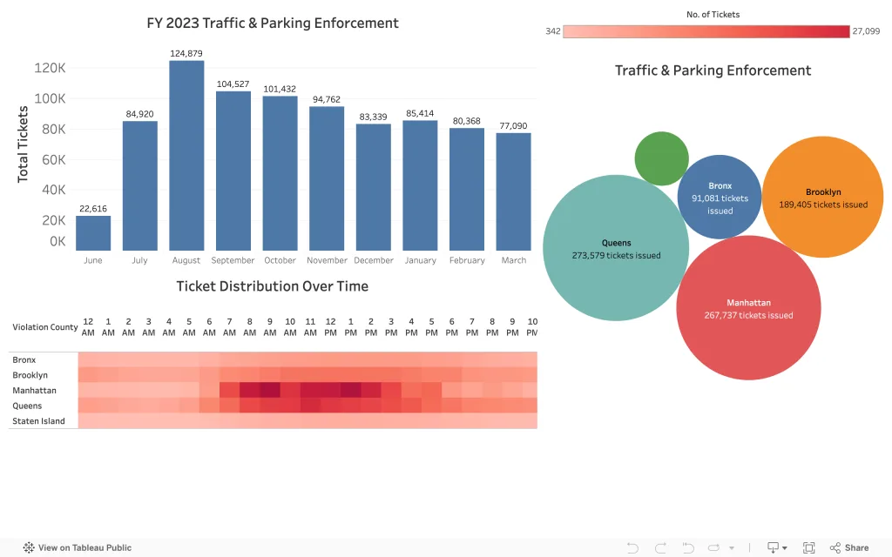
Civic AnalyticsHeat map for Ticket Issuance
260 viewsExplores ticket patterns using a visual heat-map structure.
Launch dashboardTableau Analytics
The Tableau Public profile at jeanlucsaintfleur lists 23 vizzes. This page features the dashboards that loaded reliably during the audit and sends visitors to Tableau Public for the full interactive collection.
Open full Tableau profile
Civic AnalyticsExplores ticket patterns using a visual heat-map structure.
Launch dashboard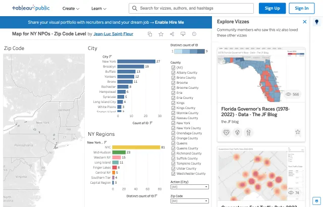
Community DevelopmentMaps nonprofit coverage and geography at the ZIP-code level.
Launch dashboard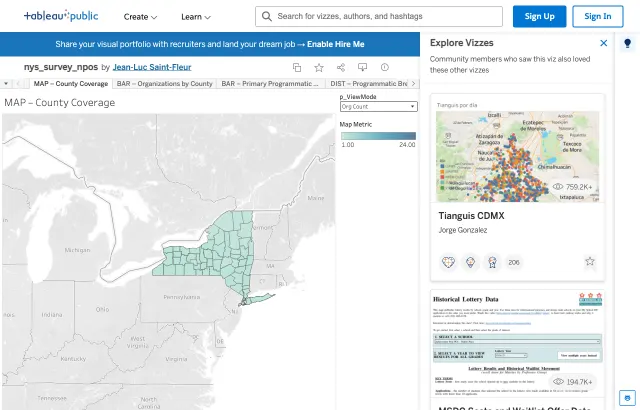
Community DevelopmentShows county coverage from New York nonprofit survey data.
Launch dashboard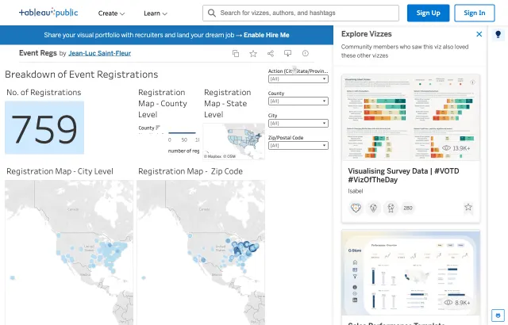
OperationsTracks event registrations and operational participation patterns.
Launch dashboard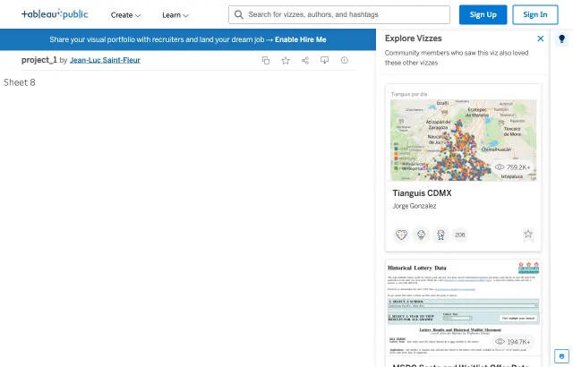
Exploratory AnalysisExploratory Tableau workbook retained as supporting visualization evidence.
Launch dashboard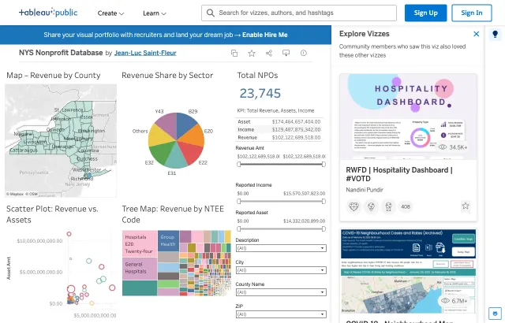
Community DevelopmentDashboard view into nonprofit database records and organizational patterns.
Launch dashboard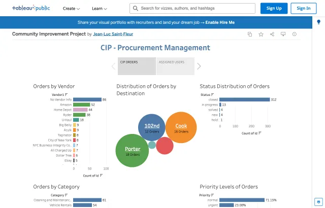
Community DevelopmentStory-based Tableau presentation for a community improvement workflow.
Launch story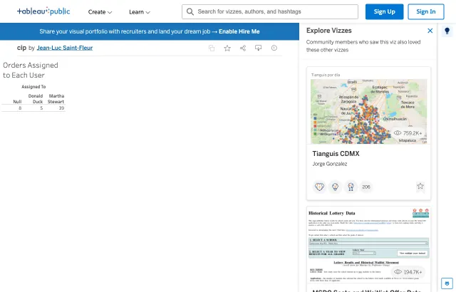
OperationsOperational assignment view for community improvement project workflows.
Launch dashboard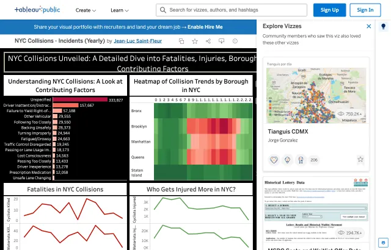
Transportation SafetyAnnual collision analysis across fatalities, injuries, borough trends, and factors.
Launch dashboard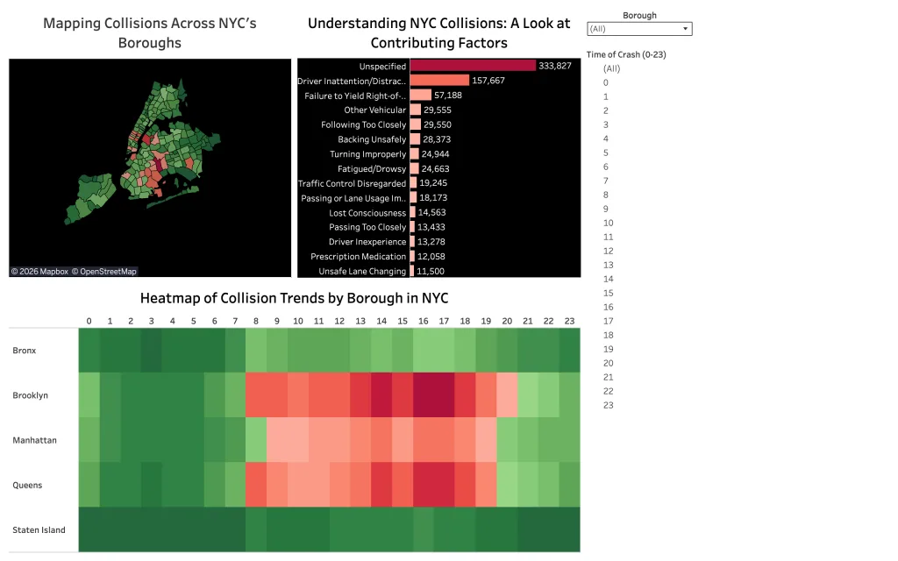
Transportation SafetyDetailed borough, ZIP-code, factor, and collision trend exploration.
Launch dashboard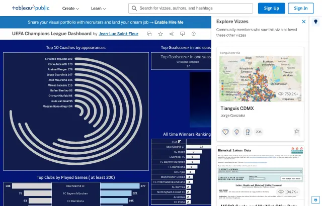
Sports AnalyticsSports dashboard showing tournament and team-level football analytics.
Launch dashboard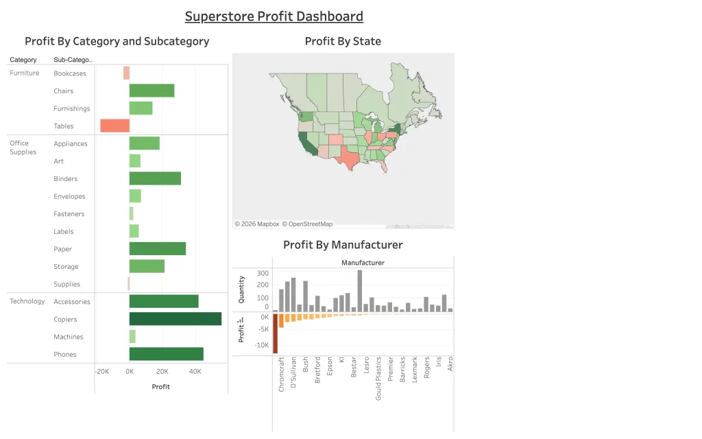
Business IntelligenceClassic BI dashboard for profit, business performance, and executive reporting.
Launch dashboard